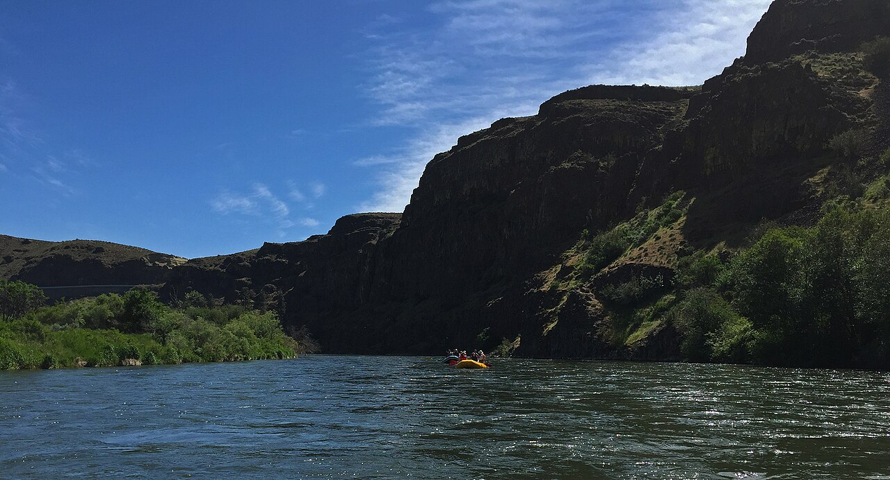

المملكة العربية السعودية — وزارة التعليم
كتاب العلوم — الجزء الأول من المقرر — طبعة ١٤٤٧ / ٢٠٢٥
التَّجْوِيَةُ وَالتَّعْرِيَةُ
الصف الثالث الابتدائي
إعداد: نايف المطيري
موقع الدرس
أَيْنَ نَحْنُ فِي الْكِتَابِ؟ صفحات ١٤٢ – ١٤٨
الوحدة الثالثة الأرض ومواردها
الدرس الثاني التجوية والتعريةصفحات ١٤٢ – ١٤٨
السُّؤَالُ الْأَسَاسِيُّ: كَيْفَ يَتَغَيَّرُ سَطْحُ الْأَرْضِ بِبُطْءٍ؟ (ص ١٤٤)
الأهداف
أَهْدَافُ التَّعَلُّمِ مستخلصة من ص ١٤٢ – ١٤٨
فِي نِهَايَةِ الدَّرْسِ أَكُونُ قَادِرًا عَلَى أَنْ:
أُعَرِّفَ التَّجْوِيَةَ وَأَذْكُرَ أَسْبَابَهَا. أُوَضِّحَ دَوْرَ الْمَاءِ الْمُتَجَمِّدِ فِي تَفَتُّتِ الصُّخُورِ. أُبَيِّنَ كَيْفَ تُسَبِّبُ الْمَخْلُوقَاتُ الْحَيَّةُ التَّجْوِيَةَ. أُعَرِّفَ التَّعْرِيَةَ وَأَذْكُرَ عَوَامِلَهَا. أُعَرِّفَ التَّرْسِيبَ وَأَصِفَ الْكُثْبَانَ الرَّمْلِيَّةَ. التهيئة
أَنْظُرُ وَأَتَسَاءَلُ ص ١٤٢ — سؤال الكتاب
كَانَ هَذَا الْوَادِي أَرْضًا مُنْبَسِطَةً. مَا الَّذِي يُسَبِّبُ تَشَكُّلَ الْأَوْدِيَةِ؟
وَادِي لَجَبٍ – جَازَانُ
معرفة سابقة
مَاذَا أَعْرِفُ مِنْ قَبْلُ؟ تمهيد تربوي
الزَّلَازِلُ وَالْبَرَاكِينُ تُغَيِّرُ سَطْحَ الْأَرْضِ بِسُرْعَةٍ
الصُّخُورُ مِنْهَا الْكَبِيرُ وَمِنْهَا الصَّغِيرُ
التُّرْبَةُ فِيهَا حُبَيْبَاتٌ صَغِيرَةٌ
الْيَوْمَ كَيْفَ تَتَغَيَّرُ الْأَرْضُ بِبُطْءٍ؟
توضيح إضافي: بَعْضُ تَغَيُّرَاتِ الْأَرْضِ تَحْتَاجُ إِلَى مَلَايِينِ السِّنِينَ، وَلَكِنَّهَا جَبَّارَةٌ.
المفردات
الْمُفْرَدَاتُ الْعِلْمِيَّةُ ص ١٤٤ — مفردات الكتاب
التَّجْوِيَةُ تَفَتُّتُ الصُّخُورِ إِلَى أَجْزَاءٍ أَصْغَرَ.
التَّعْرِيَةُ عَمَلِيَّةُ نَقْلِ الْفُتَاتِ الصَّخْرِيِّ النَّاتِجِ عَنْ عَمَلِيَّاتِ التَّجْوِيَةِ.
التَّرْسِيبُ عَمَلِيَّةُ تَجْمِيعِ لِفُتَاتِ الصُّخُورِ فِي أَمَاكِنَ مُخْتَلِفَةٍ.
الْمُفْرَدَاتُ الثَّلَاثُ كَمَا وَرَدَتْ فِي صَفْحَةِ «أَقْرَأُ وَأَتَعَلَّمُ» ص ١٤٤.
مهارة القراءة
اسْتِخْلَاصُ النَّتَائِجِ ص ١٤٤ — مهارة القراءة في الكتاب
إِرْشَادَاتُ النَّصِّ الِاسْتِنْتَاجَاتُ مَا الَّذِي يَذْكُرُهُ النَّصُّ؟ مَا الْفِكْرَةُ الَّتِي أَصِلُ إِلَيْهَا؟
سَأَجْمَعُ إِرْشَادَاتِ النَّصِّ لِأَصِلَ إِلَى اسْتِنْتَاجٍ صَحِيحٍ.
الفكرة الرئيسة
السُّؤَالُ الْأَسَاسِيُّ ص ١٤٤
كَيْفَ يَتَغَيَّرُ سَطْحُ الْأَرْضِ بِبُطْءٍ؟
الشرح
مَا التَّجْوِيَةُ؟ ص ١٤٤ — نص الكتاب
قَدْ يَظُنُّ الْبَعْضُ أَنَّ الصُّخُورَ لَا تَتَحَطَّمُ وَلَا تَتَفَتَّتُ. وَلَكِنَّ الْحَقِيقَةَ أَنَّ:
الصُّخُورَ الْكَبِيرَةَ تَتَفَتَّتُ إِلَى أَجْزَاءٍ أَصْغَرَ . كَمَا أَنَّ الْأَجْزَاءَ الصَّغِيرَةَ تَتَفَتَّتُ إِلَى حُبَيْبَاتٍ أَصْغَرَ وَتَصِيرُ جُزْءًا مِنَ التُّرْبَةِ . وَيُسَمَّى تَفَتُّتُ الصُّخُورِ إِلَى أَجْزَاءٍ أَصْغَرَ عَمَلِيَّةَ التَّجْوِيَةِ .
الشرح
التَّجْوِيَةُ بَطِيئَةٌ جِدًّا ص ١٤٤ — نص الكتاب
وَتَحْدُثُ التَّجْوِيَةُ عَادَةً بِبُطْءٍ شَدِيدٍ ، وَتَصْعُبُ مُلَاحَظَتُهَا؛ فَتَجْوِيَةُ الصُّخُورِ يُمْكِنُ أَنْ تَحْتَاجَ إِلَى مَلَايِينِ السِّنِينَ .
مَا أَسْبَابُ حُدُوثِ التَّجْوِيَةِ؟
الْمِيَاهُ الْجَارِيَةُ
الرِّيَاحُ
الْأَمْطَارُ
تَغَيُّرَاتُ دَرَجَةِ الْحَرَارَةِ تَفَتَّتَتْ هَذِهِ الصُّخُورُ بِفِعْلِ الرِّيَاحِ. (ص ١٤٤)
محاكاة
عَوَامِلُ التَّجْوِيَةِ محاكاة لنص ص ١٤٤ – ١٤٥
أَخْتَارُ عَامِلَ التَّجْوِيَةِ:
الشرح
تَجَمُّدُ الْمَاءِ وَانْصِهَارُهُ ص ١٤٥ — نص الكتاب
كَمَا أَنَّ مِيَاهَ الْأَمْطَارِ وَالثُّلُوجِ الْمُنْصَهِرَةِ تَتَخَلَّلُ الشُّقُوقَ وَمَسَامَاتِ الصُّخُورِ ،
وَعِنْدَمَا يَتَجَمَّدُ الْمَاءُ دَاخِلَهَا يَزِيدُ مِنْ تَشَقُّقِهَا. وَعِنْدَمَا يُصْبِحُ الْجَوُّ دَافِئًا تَنْصَهِرُ الْمِيَاهُ الْمُتَجَمِّدَةُ . وَمَعَ مُرُورِ الزَّمَنِ يُؤَدِّي تَكْرَارُ تَجَمُّدِ الْمِيَاهِ وَانْصِهَارِهَا إِلَى تَفَتُّتِ الصُّخُورِ .
تَتَكَسَّرُ الصُّخُورُ عِنْدَمَا يَتَجَمَّدُ الْمَاءُ فِي شُقُوقِهَا. (ص ١٤٥)
الشرح
الْمَخْلُوقَاتُ الْحَيَّةُ وَالتَّجْوِيَةُ ص ١٤٥ — نص الكتاب
وَيُمْكِنُ لِلْمَخْلُوقَاتِ الْحَيَّةِ أَنْ تُسَبِّبَ التَّجْوِيَةَ:
النَّبَاتَاتُ فَقَدْ تَنْمُو فِي شُقُوقِ الصَّخْرِ، فَتُفَكِّكُهُ.
الْحَيَوَانَاتُ وَعِنْدَمَا تَحْفِرُ الْأَرْضَ فَإِنَّهَا تَكْشِفُ الصُّخُورَ الْمَدْفُونَةَ، فَتَتَعَرَّضُ الصُّخُورُ لِلتَّجْوِيَةِ.
نَمَتْ هَذِهِ الشَّجَرَةُ فِي شِقٍّ دَاخِلَ الصَّخْرَةِ، وَقَسَمَتْهَا إِلَى جُزْأَيْنِ. (ص ١٤٥)
سؤال من الكتاب
أَقْرَأُ الصُّورَةَ ص ١٤٥
مَا سَبَبُ تَجْوِيَةِ هَذِهِ الصُّخُورِ؟
إِرْشَادُ الْكِتَابِ: النَّظَرُ إِلَى الصُّخُورِ فِي الصُّورَةِ.
إظهار الإجابة إجابة نموذجية مقترحة الصُّخُورُ فِي الصُّورَةِ مُتَشَقِّقَةٌ وَمُقَسَّمَةٌ إِلَى كُتَلٍ وَبَيْنَهَا شُقُوقٌ وَاسِعَةٌ.وَالسَّبَبُ: أَنَّ مِيَاهَ الْأَمْطَارِ تَتَخَلَّلُ شُقُوقَ الصُّخُورِ وَمَسَامَاتِهَا، وَعِنْدَمَا يَتَجَمَّدُ الْمَاءُ دَاخِلَهَا يَزِيدُ مِنْ تَشَقُّقِهَا، ثُمَّ يَنْصَهِرُ إِذَا دَفِئَ الْجَوُّ. وَمَعَ مُرُورِ الزَّمَنِ يُؤَدِّي تَكْرَارُ ذَلِكَ إِلَى تَفَتُّتِ الصُّخُورِ . (ص ١٤٥)
أختبر نفسي
أَخْتَبِرُ نَفْسِي ص ١٤٥
أَسْتَخْلِصُ النَّتَائِجَ. لِمَاذَا تَتَّسِعُ الشُّقُوقُ أَحْيَانًا فِي الصُّخُورِ فِي الْأَجْوَاءِ الْبَارِدَةِ؟
إظهار الإجابة إجابة نموذجية لِأَنَّ مِيَاهَ الْأَمْطَارِ وَالثُّلُوجِ تَتَخَلَّلُ الشُّقُوقَ وَمَسَامَاتِ الصُّخُورِ ، وَفِي الْجَوِّ الْبَارِدِ يَتَجَمَّدُ الْمَاءُ دَاخِلَهَا فَيَزِيدُ مِنْ تَشَقُّقِهَا ؛ لِأَنَّ الْمَاءَ الْمُتَجَمِّدَ يَدْفَعُ جَوَانِبَ الشِّقِّ وَيُوَسِّعُهُ. وَمَعَ تَكْرَارِ التَّجَمُّدِ وَالِانْصِهَارِ تَتَّسِعُ الشُّقُوقُ حَتَّى تَتَفَتَّتَ الصُّخُورُ. (ص ١٤٥)
التَّفْكِيرُ النَّاقِدُ. أُوَضِّحُ كَيْفَ يُسْهِمُ الْإِنْسَانُ فِي حُدُوثِ التَّجْوِيَةِ؟
إظهار الإجابة إجابة نموذجية مقترحة يُسْهِمُ الْإِنْسَانُ فِي التَّجْوِيَةِ عِنْدَمَا:يَحْفِرُ الْأَرْضَ لِبِنَاءِ الطُّرُقِ وَالْمَنَازِلِ، فَيَكْشِفُ الصُّخُورَ الْمَدْفُونَةَ فَتَتَعَرَّضُ لِلْمَاءِ وَالرِّيَاحِ وَالْحَرَارَةِ.يُفَجِّرُ الصُّخُورَ وَيُكَسِّرُهَا فِي الْمَحَاجِرِ وَشَقِّ الْجِبَالِ.يُلَوِّثُ الْهَوَاءَ فَتَنْزِلُ الْأَمْطَارُ حَامِلَةً مَوَادَّ تُسْرِعُ تَفَتُّتَ الصُّخُورِ.يُزِيلُ النَّبَاتَاتِ فَتَنْكَشِفُ الْأَرْضُ وَتَزْدَادُ تَجْوِيَتُهَا.
الشرح
مَا التَّعْرِيَةُ؟ ص ١٤٦ — نص الكتاب
عِنْدَمَا تَتَفَتَّتُ الصُّخُورُ بِفِعْلِ التَّجْوِيَةِ يَنْتَقِلُ الْفُتَاتُ الصَّخْرِيُّ إِلَى أَمَاكِنَ أُخْرَى ؛ بِفِعْلِ التَّعْرِيَةِ.
وَالتَّعْرِيَةُ عَمَلِيَّةُ نَقْلِ الْفُتَاتِ الصَّخْرِيِّ النَّاتِجِ عَنْ عَمَلِيَّاتِ التَّجْوِيَةِ.
الشرح
التَّجْوِيَةُ وَالتَّعْرِيَةُ مَعًا ص ١٤٦ — نص الكتاب
فَالتَّجْوِيَةُ وَالتَّعْرِيَةُ عَمَلِيَّتَانِ تَعْمَلَانِ مَعًا وَبِبُطْءٍ ،
حَيْثُ أَثْبَتَتِ الْهَيْئَةُ الْمَلَكِيَّةُ لِمُحَافَظَةِ الْعُلَا أَنَّهُ قَدْ يَسْتَغْرِقُ تَفْتِيتُ الصُّخُورِ مَلَايِينَ السِّنِينَ ، فَالتَّعْرِيَةُ عَمَلِيَّةٌ بَطِيئَةٌ لَكِنَّهَا جَبَّارَةٌ .
وَتَعْمَلُ قُوَّةُ الْجَاذِبِيَّةِ عَلَى نَقْلِ الْأَجْزَاءِ الصَّغِيرَةِ إِلَى أَسْفَلِ الْجِبَالِ.
سَقَطَتْ هَذِهِ الصُّخُورُ إِلَى الْأَسْفَلِ بِفِعْلِ قُوَّةِ الْجَاذِبِيَّةِ. (ص ١٤٦)
الشرح
الْمِيَاهُ تَنْقُلُ الْفُتَاتَ ص ١٤٧ — نص الكتاب
وَتَحْمِلُ مِيَاهُ الْأَنْهَارِ وَالسُّيُولِ وَالْأَمْوَاجِ الْبَحْرِيَّةِ فُتَاتَ الصُّخُورِ، وَتَنْقُلُهُ لِيَتَجَمَّعَ فِي أَمَاكِنَ أُخْرَى.
فَالتَّرْسِيبُ عَمَلِيَّةُ تَجْمِيعٍ لِفُتَاتِ الصُّخُورِ فِي أَمَاكِنَ مُخْتَلِفَةٍ.
الشرح
الرِّيَاحُ وَالْكُثْبَانُ الرَّمْلِيَّةُ ص ١٤٧ — نص الكتاب
وَتَنْقُلُ الرِّيَاحُ الْحُبَيْبَاتِ الصَّغِيرَةَ مِنَ الرَّمْلِ أَوِ الصَّخْرِ؛
وَتَتَرَسَّبُ مُشَكِّلَةً الْكُثْبَانَ الرَّمْلِيَّةَ ، وَهِيَ مِنَ الظَّوَاهِرِ الَّتِي تُمَيِّزُ الصَّحْرَاءَ .
تَتَرَسَّبُ حُبَيْبَاتُ الرَّمْلِ مُشَكِّلَةً الْكُثْبَانَ الرَّمْلِيَّةَ. (ص ١٤٧)
محاكاة
تَجْوِيَةٌ ← تَعْرِيَةٌ ← تَرْسِيبٌ محاكاة لنص ص ١٤٤ – ١٤٧
أُشَغِّلُ الْعَمَلِيَّاتِ
أُعِيدُ
١ مِنْ ٣
محاكاة
تَجْوِيَةٌ أَمْ تَعْرِيَةٌ أَمْ تَرْسِيبٌ؟ تدريب تفاعلي على نص ص ١٤٤ – ١٤٧
١ مِنْ ٦ الْإِجَابَاتُ الصَّحِيحَةُ: ٠
تَجْوِيَةٌ
تَعْرِيَةٌ
تَرْسِيبٌ
أَخْتَارُ الْعَمَلِيَّةَ، ثُمَّ أَعْرِفُ السَّبَبَ.
أختبر نفسي
أَخْتَبِرُ نَفْسِي ص ١٤٧
أَسْتَخْلِصُ النَّتَائِجَ. مَا أَسْبَابُ حُدُوثِ عَمَلِيَّةِ التَّعْرِيَةِ؟
إظهار الإجابة إجابة نموذجية قُوَّةُ الْجَاذِبِيَّةِ: تَنْقُلُ الْأَجْزَاءَ الصَّغِيرَةَ إِلَى أَسْفَلِ الْجِبَالِ.الْمِيَاهُ: مِيَاهُ الْأَنْهَارِ وَالسُّيُولِ وَالْأَمْوَاجِ الْبَحْرِيَّةِ تَحْمِلُ فُتَاتَ الصُّخُورِ وَتَنْقُلُهُ.الرِّيَاحُ: تَنْقُلُ الْحُبَيْبَاتِ الصَّغِيرَةَ مِنَ الرَّمْلِ أَوِ الصَّخْرِ. (ص ١٤٦ – ١٤٧)
التَّفْكِيرُ النَّاقِدُ. مَتَى تَحْدُثُ عَمَلِيَّةُ التَّعْرِيَةِ بِسُرْعَةٍ؟
إظهار الإجابة إجابة نموذجية مقترحة تَحْدُثُ التَّعْرِيَةُ بِسُرْعَةٍ عِنْدَمَا تَشْتَدُّ الْقُوَّةُ النَّاقِلَةُ :السُّيُولِ وَالْأَمْطَارِ الْغَزِيرَةِ وَالْفَيَضَانَاتِ ؛ فَالْمَاءُ السَّرِيعُ يَحْمِلُ فُتَاتًا أَكْثَرَ.الرِّيَاحِ الشَّدِيدَةِ وَالْعَوَاصِفِ الرَّمْلِيَّةِ.الْمُنْحَدَرَاتِ الشَّدِيدَةِ ؛ لِأَنَّ الْجَاذِبِيَّةَ تَسْحَبُ الْفُتَاتَ بِسُرْعَةٍ.خَالِيَةً مِنَ النَّبَاتَاتِ ؛ فَجُذُورُ النَّبَاتَاتِ تُمْسِكُ التُّرْبَةَ وَتَحْفَظُهَا مِنَ الِانْجِرَافِ.
نشاط
نَشَاطُ الْكِتَابِ — تَرْسِيبُ الْمَوَادِّ ص ١٤٧ — خطوات النشاط
أَعْمَلُ نَمُوذَجًا. أَضَعُ كُوبًا مِنْ كُلٍّ مِنَ الرَّمْلِ، وَالطِّينِ وَالْحَصَى فِي وِعَاءٍ، وَأَمْلَأُ الْوِعَاءَ تَمَامًا بِالْمَاءِ، ثُمَّ أُغْلِقُهُ جَيِّدًا.أَرُجُّ الْوِعَاءَ حَوَالَيْ ١٠ مَرَّاتٍ، وَأَدَعُهُ حَتَّى يَصْفُوَ، وَأَرْسُمُ مَا أُشَاهِدُهُ. أُغْلِقُ الْوِعَاءَ جَيِّدًا قَبْلَ الرَّجِّ، وَأَرُجُّهُ بَعِيدًا عَنْ وَجْهِي، وَأَغْسِلُ يَدَيَّ بَعْدَ النَّشَاطِ.
إجابة النشاط
الْخُطُوَتَانِ ٣ وَ ٤ ص ١٤٧
٣. أُفَسِّرُ الْبَيَانَاتِ. مَا التَّرْتِيبُ الَّذِي حَدَثَ لِلْمَوَادِّ عِنْدَمَا تَرَسَّبَتْ؟
إظهار الإجابة إجابة نموذجية مقترحة تَرَسَّبَتِ الْمَوَادُّ فِي طَبَقَاتٍ مِنْ أَسْفَلَ إِلَى أَعْلَى:الْحَصَى فِي الْأَسْفَلِ؛ لِأَنَّهُ الْأَثْقَلُ وَالْأَكْبَرُ حَجْمًا فَتَرَسَّبَ أَوَّلًا.الرَّمْلُ فَوْقَهُ.الطِّينُ فِي الْأَعْلَى؛ لِأَنَّ حُبَيْبَاتِهِ الْأَصْغَرُ وَالْأَخَفُّ فَتَرَسَّبَتْ أَخِيرًا.
٤. أَسْتَنْتِجُ. مَاذَا يَحْدُثُ لِفُتَاتِ الصُّخُورِ الْمَنْقُولَةِ إِلَى الْأَنْهَارِ عِنْدَمَا تَقِلُّ سُرْعَةُ الْمَاءِ؟
إظهار الإجابة إجابة نموذجية مقترحة عِنْدَمَا تَقِلُّ سُرْعَةُ الْمَاءِ لَا يَسْتَطِيعُ حَمْلَ الْفُتَاتِ ، فَيَتَرَسَّبُ فِي الْقَاعِ .الْأَكْبَرُ وَالْأَثْقَلُ أَوَّلًا (الْحَصَى)، ثُمَّ الرَّمْلُ، ثُمَّ الطِّينُ الْأَخَفُّ.التَّرْسِيبِ . (ص ١٤٧)
نشاط استقصائي
أَسْتَكْشِفُ — الْفَرَضِيَّةُ وَالْأَدَوَاتُ ص ١٤٣ — نشاط الكتاب
سؤال النشاط: كَيْفَ تَتَغَيَّرُ الصُّخُورُ بِفِعْلِ الْمِيَاهِ الْجَارِيَةِ؟
أُكَوِّنُ فَرَضِيَّةً: مَاذَا يَحْدُثُ لِلصُّخُورِ عِنْدَمَا تَتَحَرَّكُ فِي الْمَاءِ؟ أَكْتُبُ فَرَضِيَّةً عَلَى النَّحْوِ الْآتِي: «إِذَا حَرَّكْتُ الصُّخُورَ بِقُوَّةٍ فِي الْمَاءِ فَإِنَّ .........».
أَحْتَاجُ إِلَى:
كَأْسٍ مُدَرَّجَةٍ
صُخُورٍ رَمْلِيَّةٍ
ثَلَاثَةِ أَوْعِيَةٍ بِلَاسْتِيكِيَّةٍ مُغَطَّاةٍ
سَاعَةِ إِيقَافٍ · عَدَسَةٍ مُكَبِّرَةٍ نشاط استقصائي
أَسْتَكْشِفُ — الْخُطُوَاتُ ص ١٤٣ — الخطوات ١ – ٣
أَقِيسُ. أَضَعُ مُلْصَقًا عَلَى كُلِّ وِعَاءٍ يَحْمِلُ أَحَدَ الْحُرُوفِ (أ، ب، ج)، ثُمَّ أَضَعُ فِي كُلٍّ مِنْهَا قِطَعًا مُتَسَاوِيَةً مِنَ الصَّخْرِ. أَمْلَأُ الْأَوْعِيَةَ بِالْكَمِّيَّةِ نَفْسِهَا مِنَ الْمَاءِ، وَأَضَعُ عَلَيْهَا الْأَغْطِيَةَ.أَتَعَامَلُ مَعَ الْمُتَغَيِّرَاتِ. أُلَاحِظُ. أَسْتَخْدِمُ عَدَسَةً مُكَبِّرَةً، وَأُلَاحِظُ الصُّخُورَ فِي الْأَوْعِيَةِ كُلِّهَا. مَاذَا حَدَثَ؟أستخلص النتائج
الْخُطُوَتَانِ ٣ وَ ٤ ص ١٤٣
٣. أُلَاحِظُ. مَاذَا حَدَثَ لِلصُّخُورِ فِي الْأَوْعِيَةِ؟
إظهار الإجابة إجابة نموذجية مقترحة الْوِعَاءُ (أ): بَقِيَتِ الصُّخُورُ كَمَا هِيَ، وَالْمَاءُ صَافٍ.الْوِعَاءُ (ب): صَارَ الْمَاءُ عَكِرًا قَلِيلًا ، وَظَهَرَ فُتَاتٌ رَمْلِيٌّ فِي الْقَاعِ، وَبَدَتْ حَوَافُّ الصُّخُورِ أَقَلَّ حِدَّةً.الْوِعَاءُ (ج): صَارَ الْمَاءُ أَشَدَّ عَكَارَةً ، وَازْدَادَ الْفُتَاتُ فِي الْقَاعِ، وَصَارَتِ الصُّخُورُ أَمْلَسَ وَأَصْغَرَ .
٤. أَسْتَنْتِجُ. كَيْفَ تَتَغَيَّرُ الصُّخُورُ بِفِعْلِ الْمِيَاهِ الْجَارِيَةِ؟
إظهار الإجابة إجابة نموذجية مقترحة الْمِيَاهُ الْجَارِيَةُ تُحَرِّكُ الصُّخُورَ فَتَصْطَدِمُ بَعْضُهَا بِبَعْضٍ ، فَتَتَفَتَّتُ إِلَى أَجْزَاءٍ أَصْغَرَ وَتَنْعَمُ حَوَافُّهَا . وَكُلَّمَا زَادَتْ مُدَّةُ الْحَرَكَةِ وَقُوَّتُهَا زَادَ التَّفَتُّتُ . وَهَذِهِ هِيَ عَمَلِيَّةُ التَّجْوِيَةِ بِفِعْلِ الْمِيَاهِ الْجَارِيَةِ. (ص ١٤٤)
أستكشف أكثر
أُجَرِّبُ ص ١٤٣
هَلْ أَحْصُلُ عَلَى النَّتَائِجِ نَفْسِهَا لَوِ اسْتَخْدَمْتُ أَنْوَاعًا أُخْرَى مِنَ الصُّخُورِ؟ أَضَعُ خُطَّةً لِلْإِجَابَةِ عَنْ ذَلِكَ، ثُمَّ أُجَرِّبُهَا عَمَلِيًّا.
إظهار الإجابة إجابة نموذجية مقترحة خُطَّتِي: نَوْعٌ مُخْتَلِفٌ مِنَ الصُّخُورِ (رَمْلِيٌّ · جِيرِيٌّ · جْرَانِيتٌ صُلْبٌ) بِالْكَتْلَةِ نَفْسِهَا.الْكَمِّيَّةَ نَفْسَهَا مِنَ الْمَاءِ ، وَأُغْلِقُهَا.بِالْقُوَّةِ نَفْسِهَا وَالْمُدَّةِ نَفْسِهَا (٥ دَقَائِقَ).تَوَقُّعِي: لَا أَحْصُلُ عَلَى النَّتَائِجِ نَفْسِهَا ؛ فَالصُّخُورُ الرَّمْلِيَّةُ اللَّيِّنَةُ تَتَفَتَّتُ أَسْرَعَ، أَمَّا الصُّخُورُ الصُّلْبَةُ فَتَحْتَاجُ إِلَى وَقْتٍ أَطْوَلَ.
مراجعة الدرس
السُّؤَالَانِ ١ وَ ٢ ص ١٤٨
١. الْمُفْرَدَاتُ. مَا الْمَقْصُودُ بِالتَّعْرِيَةِ؟
إظهار الإجابة إجابة نموذجية التَّعْرِيَةُ عَمَلِيَّةُ نَقْلِ الْفُتَاتِ الصَّخْرِيِّ النَّاتِجِ عَنْ عَمَلِيَّاتِ التَّجْوِيَةِ إِلَى أَمَاكِنَ أُخْرَى. (ص ١٤٦)
٢. أَسْتَخْلِصُ النَّتَائِجَ. مَاذَا يَحْدُثُ لِفُتَاتِ الصُّخُورِ النَّاتِجَةِ عَنِ التَّعْرِيَةِ عِنْدَ حُدُوثِ عَمَلِيَّةِ التَّرْسِيبِ؟
إظهار الإجابة إجابة نموذجية إِرْشَادَاتُ النَّصِّ: تَحْمِلُ مِيَاهُ الْأَنْهَارِ وَالسُّيُولِ وَالْأَمْوَاجِ الْبَحْرِيَّةِ فُتَاتَ الصُّخُورِ وَتَنْقُلُهُ لِيَتَجَمَّعَ فِي أَمَاكِنَ أُخْرَى. وَتَنْقُلُ الرِّيَاحُ الْحُبَيْبَاتِ الصَّغِيرَةَ.الِاسْتِنْتَاجُ: يَتَوَقَّفُ الْفُتَاتُ عَنِ الْحَرَكَةِ وَيَتَجَمَّعُ فِي أَمَاكِنَ مُخْتَلِفَةٍ ؛ فَيَتَرَسَّبُ الْأَكْبَرُ وَالْأَثْقَلُ أَوَّلًا ثُمَّ الْأَصْغَرُ، وَتَتَكَوَّنُ مِنْهُ مَعَالِمُ جَدِيدَةٌ مِثْلُ الْكُثْبَانِ الرَّمْلِيَّةِ . (ص ١٤٧)
مراجعة الدرس
السُّؤَالَانِ ٣ وَ ٤ ص ١٤٨
٣. التَّفْكِيرُ النَّاقِدُ. كَيْفَ تَعْمَلُ كُلٌّ مِنَ التَّجْوِيَةِ وَالتَّعْرِيَةِ مَعًا عَلَى تَغْيِيرِ مَعَالِمِ سَطْحِ الْأَرْضِ؟
إظهار الإجابة إجابة نموذجية مقترحة أَوَّلًا التَّجْوِيَةُ: تُفَتِّتُ الصُّخُورَ الْكَبِيرَةَ إِلَى أَجْزَاءٍ أَصْغَرَ بِفِعْلِ الْمِيَاهِ وَالرِّيَاحِ وَالْأَمْطَارِ وَتَغَيُّرَاتِ الْحَرَارَةِ وَالْمَخْلُوقَاتِ الْحَيَّةِ.ثُمَّ التَّعْرِيَةُ: تَنْقُلُ هَذَا الْفُتَاتَ إِلَى أَمَاكِنَ أُخْرَى بِفِعْلِ الْجَاذِبِيَّةِ وَالْمِيَاهِ وَالرِّيَاحِ.ثُمَّ التَّرْسِيبُ: يَتَجَمَّعُ الْفُتَاتُ فِي أَمَاكِنَ جَدِيدَةٍ.مَلَايِينَ السِّنِينَ تَتَشَكَّلُ الْأَوْدِيَةُ وَتَنْخَفِضُ الْجِبَالُ وَتَتَكَوَّنُ الْكُثْبَانُ الرَّمْلِيَّةُ ؛ فَالتَّعْرِيَةُ عَمَلِيَّةٌ بَطِيئَةٌ لَكِنَّهَا جَبَّارَةٌ . (ص ١٤٦)
٤. أَخْتَارُ الْإِجَابَةَ الصَّحِيحَةَ. أَيُّ الْعَوَامِلِ الْآتِيَةِ لَيْسَ مِنْ عَوَامِلِ التَّجْوِيَةِ؟
إظهار الإجابة إجابة نموذجية الْإِجَابَةُ الصَّحِيحَةُ: ب – الضَّوْءُ . فَعَوَامِلُ التَّجْوِيَةِ هِيَ الْمِيَاهُ الْجَارِيَةُ وَالرِّيَاحُ وَالْأَمْطَارُ وَتَغَيُّرَاتُ دَرَجَةِ الْحَرَارَةِ، وَكَذَلِكَ الْمَخْلُوقَاتُ الْحَيَّةُ كَالنَّبَاتَاتِ. (ص ١٤٤ – ١٤٥)
مراجعة الدرس
السُّؤَالُ الْأَسَاسِيُّ ص ١٤٨
٥. السُّؤَالُ الْأَسَاسِيُّ. كَيْفَ يَتَغَيَّرُ سَطْحُ الْأَرْضِ بِبُطْءٍ؟
إظهار الإجابة إجابة نموذجية يَتَغَيَّرُ سَطْحُ الْأَرْضِ بِبُطْءٍ بِثَلَاثِ عَمَلِيَّاتٍ مُتَتَابِعَةٍ:١. التَّجْوِيَةُ: تَفَتُّتُ الصُّخُورِ إِلَى أَجْزَاءٍ أَصْغَرَ بِفِعْلِ الْمِيَاهِ الْجَارِيَةِ وَالرِّيَاحِ وَالْأَمْطَارِ وَتَغَيُّرَاتِ الْحَرَارَةِ وَتَجَمُّدِ الْمَاءِ وَالْمَخْلُوقَاتِ الْحَيَّةِ.٢. التَّعْرِيَةُ: نَقْلُ الْفُتَاتِ الصَّخْرِيِّ إِلَى أَمَاكِنَ أُخْرَى بِفِعْلِ الْجَاذِبِيَّةِ وَالْمِيَاهِ وَالرِّيَاحِ.٣. التَّرْسِيبُ: تَجْمِيعُ الْفُتَاتِ فِي أَمَاكِنَ مُخْتَلِفَةٍ، وَمِنْ ذَلِكَ تَكَوُّنُ الْكُثْبَانِ الرَّمْلِيَّةِ.مَلَايِينِ السِّنِينَ .
ملخص مصور
مُلَخَّصٌ مُصَوَّرٌ ص ١٤٨ — ملخص الكتاب
الْمِحْوَرُ الْخُلَاصَةُ التَّجْوِيَةُ التَّجْوِيَةُ نَاتِجَةٌ عَنْ تَفَتُّتِ الصُّخُورِ الْكَبِيرَةِ إِلَى أَجْزَاءٍ صَغِيرَةٍ. التَّعْرِيَةُ تَحْدُثُ التَّعْرِيَةُ عِنْدَمَا يَنْتَقِلُ الْفُتَاتُ الصَّخْرِيُّ مِنْ مَكَانٍ إِلَى آخَرَ.
المطويات
أُنَظِّمُ أَفْكَارِي ص ١٤٨ — المطويات
أَعْمَلُ مَطْوِيَّةً كَالْمُبَيَّنَةِ فِي الشَّكْلِ، أُلَخِّصُ فِيهَا مَا تَعَلَّمْتُهُ عَنِ التَّجْوِيَةِ وَالتَّعْرِيَةِ.
التَّجْوِيَةُ
التَّعْرِيَةُ
كَيْفَ يُغَيِّرُ التَّرْسِيبُ سَطْحَ الْأَرْضِ؟ العلوم والكتابة والمجتمع
أَنْشِطَةُ التَّوَسُّعِ ص ١٤٨ — الكتاب
الْعُلُومُ وَالْكِتَابَةُ — أَكْتُبُ قِصَّةً: أَكْتُبُ قِصَّةً عَلَى لِسَانِ حَجَرٍ فِي نَهْرٍ جَارٍ. أُبَيِّنُ فِيهَا تَأْثِيرَ التَّجْوِيَةِ وَالتَّعْرِيَةِ فِيهِ.
الْعُلُومُ وَالْمُجْتَمَعُ — أُلَخِّصُ: أَكْتُبُ بَحْثًا حَوْلَ الْكُثْبَانِ الرَّمْلِيَّةِ، أُضَمِّنُهُ مَعْلُومَاتٍ عَنْ كَيْفِيَّةِ تَشَكُّلِهَا وَأَشْكَالِهَا وَعَلَاقَتِهَا بِتَعْرِيَةِ الصُّخُورِ. وَأَتَوَاصَلُ مَعَ زُمَلَائِي بِمَا تَوَصَّلْتُ إِلَيْهِ.
تدريب إضافي
أَسْئِلَةٌ تَدْرِيبِيَّةٌ إِضَافِيَّةٌ من إعداد المعلم — ليست من الكتاب
١. مَا الْفَرْقُ بَيْنَ التَّجْوِيَةِ وَالتَّعْرِيَةِ؟
إظهار الإجابة الإجابة التَّجْوِيَةُ تَفَتُّتُ الصُّخُورِ إِلَى أَجْزَاءٍ أَصْغَرَ فِي مَكَانِهَا، أَمَّا التَّعْرِيَةُ فَهِيَ نَقْلُ هَذَا الْفُتَاتِ إِلَى أَمَاكِنَ أُخْرَى. (ص ١٤٤ و ١٤٦)
٢. كَيْفَ تَتَكَوَّنُ الْكُثْبَانُ الرَّمْلِيَّةُ؟
إظهار الإجابة الإجابة تَنْقُلُ الرِّيَاحُ الْحُبَيْبَاتِ الصَّغِيرَةَ مِنَ الرَّمْلِ أَوِ الصَّخْرِ، ثُمَّ تَتَرَسَّبُ مُشَكِّلَةً الْكُثْبَانَ الرَّمْلِيَّةَ، وَهِيَ مِنَ الظَّوَاهِرِ الَّتِي تُمَيِّزُ الصَّحْرَاءَ. (ص ١٤٧)
الملخص
مَاذَا تَعَلَّمْتُ؟ خلاصة ص ١٤٢ – ١٤٨
التَّجْوِيَةُ تَفَتُّتُ الصُّخُورِ إِلَى أَجْزَاءٍ أَصْغَرَ، وَتَحْدُثُ بِبُطْءٍ شَدِيدٍ. أَسْبَابُ التَّجْوِيَةِ: الْمِيَاهُ الْجَارِيَةُ وَالرِّيَاحُ وَالْأَمْطَارُ وَتَغَيُّرَاتُ دَرَجَةِ الْحَرَارَةِ. تَكْرَارُ تَجَمُّدِ الْمِيَاهِ فِي شُقُوقِ الصُّخُورِ وَانْصِهَارِهَا يُؤَدِّي إِلَى تَفَتُّتِهَا. الْمَخْلُوقَاتُ الْحَيَّةُ تُسَبِّبُ التَّجْوِيَةَ؛ فَالنَّبَاتَاتُ تَنْمُو فِي الشُّقُوقِ فَتُفَكِّكُ الصَّخْرَ. التَّعْرِيَةُ نَقْلُ الْفُتَاتِ الصَّخْرِيِّ بِفِعْلِ الْجَاذِبِيَّةِ وَالْمِيَاهِ وَالرِّيَاحِ. التَّرْسِيبُ تَجْمِيعُ فُتَاتِ الصُّخُورِ فِي أَمَاكِنَ مُخْتَلِفَةٍ، وَمِنْهُ الْكُثْبَانُ الرَّمْلِيَّةُ. خريطة مفاهيم
أُرَتِّبُ أَفْكَارِي تنظيم لمحتوى الدرس
تَغَيُّرُ سَطْحِ الْأَرْضِ بِبُطْءٍ
التَّجْوِيَةُ
مِيَاهٌ وَرِيَاحٌ وَأَمْطَارٌ تَغَيُّرَاتُ الْحَرَارَةِ وَالتَّجَمُّدُ الْمَخْلُوقَاتُ الْحَيَّةُ
التَّعْرِيَةُ وَالتَّرْسِيبُ
الْجَاذِبِيَّةُ تَنْقُلُ إِلَى أَسْفَلَ الْمِيَاهُ وَالرِّيَاحُ تَحْمِلُ الْفُتَاتَ تَرْسِيبٌ ← كُثْبَانٌ رَمْلِيَّةٌ
تقويم ختامي
أَخْتَارُ الْإِجَابَةَ الصَّحِيحَةَ تفاعلي — أسئلة تدريبية
١. تَفَتُّتُ الصُّخُورِ إِلَى أَجْزَاءٍ أَصْغَرَ يُسَمَّى:
التَّعْرِيَةَ التَّجْوِيَةَ التَّرْسِيبَ
٢. الْقُوَّةُ الَّتِي تَنْقُلُ الْأَجْزَاءَ الصَّغِيرَةَ إِلَى أَسْفَلِ الْجِبَالِ هِيَ:
قُوَّةُ الْجَاذِبِيَّةِ ضَوْءُ الشَّمْسِ الْبَرَاكِينُ
٣. تَتَشَكَّلُ الْكُثْبَانُ الرَّمْلِيَّةُ بِفِعْلِ:
الزَّلَازِلِ الْبَرَاكِينِ تَرْسِيبِ الرِّيَاحِ لِلرَّمْلِ
بطاقة الخروج
قَبْلَ أَنْ أُغَادِرَ الصَّفَّ تقويم ختامي
٢ أَذْكُرُ عَامِلَيْنِ مِنْ عَوَامِلِ التَّعْرِيَةِ.
أَكْتُبُ إِجَابَاتِي فِي بِطَاقَةٍ صَغِيرَةٍ وَأُسَلِّمُهَا لِلْمُعَلِّمِ.
إثراء اختياري
محاكاة: التجوية والتعرية والترسيب إثراء اختياري التجوية التجوية ١ التعرية التعرية ٢ الترسيب الترسيب ٣ شكلٌ جديد شكلٌ جديد ٤ كيف يتغيَّر شكل الأرض ببطء؟
التجوية التعرية الترسيب شكلٌ جديد
اضغط على أيِّ عنصرٍ في الرسم، أو تابع الخطوات بالترتيب.
◀ السابق التالي ▶
إثراء اختياري
هل تعلم؟ إثراء اختياري ١
الماء يشقُّ الصخر ببطء؛ فما لا تقدر عليه القوةُ تفعله المداومة مع الزمن.
٢
الرياح تنقل حبيبات الرمل فتنحت الصخور وتكوِّن أشكالًا عجيبة.
٣
الحصى المستديرة في الوادي استدارت لأن الماء دحرجها زمنًا طويلًا.
التجوية تفتِّت، والتعرية تنقل، والترسيب يُرسِي.
إثراء اختياري
بطاقات المفردات — اقلبها! إثراء اختياري التَّجْوِيَةُ اضغط لترى المعنى
تَفَتُّتُ الصُّخُورِ إِلَى أَجْزَاءٍ أَصْغَرَ.
التَّعْرِيَةُ اضغط لترى المعنى
عَمَلِيَّةُ نَقْلِ الْفُتَاتِ الصَّخْرِيِّ النَّاتِجِ عَنْ عَمَلِيَّاتِ التَّجْوِيَةِ.
التَّرْسِيبُ اضغط لترى المعنى
عَمَلِيَّةُ تَجْمِيعِ لِفُتَاتِ الصُّخُورِ فِي أَمَاكِنَ مُخْتَلِفَةٍ.
إظهار كل المعاني
اضغط على البطاقة لترى المعنى.
إثراء اختياري
لعبة: رتِّب بالترتيب الصحيح إثراء اختياري التعرية التجوية الترسيب
↻ إعادة الترتيب
رتِّب العمليات الثلاث.
إثراء اختياري
العلوم في حياتي إثراء اختياري تجربةٌ آمنة ضع حصًى صغيرةً في علبةٍ مغلقةٍ مع قليلٍ من الماء ورُجَّها دقيقتين، ثم لاحظ حوافَّها.
سؤال تفكير لماذا تكون حصى النهر ملساءَ ومستديرة؟
🔎 إثراء مصوّر
عدسة العلوم ألاحظ · أتساءل · أفسّر
ما الفرق بين تفتيت صخرة ونقل فتاتها إلى مكان آخر؟

🔍 تكبير الصورة نهر ياكيما بين جوانب الوادي؛ تسهم المياه الجارية في نحت سطح الأرض عبر الزمن. الصورة: Michael Campbell / Bureau of Land Management · مصدر الصورة · Public domain · نسخة مصغرة دون تغيير المحتوى
👁️ تفكك التجوية الصخور أو تغيرها في مكانها؛ وتنقل التعرية الفتات بالماء أو الرياح أو الجليد.
💡 قد يسهم الماء المتجمد في شقوق الصخور في توسيعها عند تكرار التجمد والذوبان.
🏞️ يحدث الترسيب عندما تستقر مواد منقولة؛ فقد تجمع المياه رملًا وحصى في مواضع جديدة.
مراجع الإثراء للمعلم
🧩 رسم تفاعلي
من الصخرة إلى تجمع فتات جديد أربط الأفكار
اضغط عناصر الرسم لاكتشاف معناها والعلاقة بينها.
1 🪨 صخرة ← 2 🧩 تجوية ← 3 🌊 تعرية ← 4 🏖️ ترسيب
قد تتكرر هذه العمليات وتتداخل في الطبيعة.
🧪 مختبر الاستكشاف
غيّر سرعة الماء وراقب نقل الفتات أتوقّع · أجرّب · أقارن
كيف تتغير قدرة الماء على حمل رمل متماثل إذا تغيرت سرعته وحدها؟
سرعة الجريان
بطيئة متوسطة أسرع
▶ شغّل المحاكاة ↺ إعادة
ليس المؤشر عدد حبيبات حقيقيًا؛ يؤثر حجمها وتماسكها وعمق الماء أيضًا في التعرية.
مؤشر وصفي للفتات الذي ينقله الماء
🟤 🟤 🟤 🟤 🟤 🟤 🟤 🟤 🟤 🟤
حمل أقل
حبيبات منقولة أقل.
نثبت حجم الحبيبات وشكل القناة وزمن المقارنة. ينقل الماء البطيء كمية أقل من الرمل في النموذج.
توقّع النتيجة، ثم غيّر الحالة وشغّل المحاكاة.
🤔 أين تتوقع أن يترسب الرمل عندما يصل الماء إلى مكان أبطأ؟
انْتَهَى الدَّرْسُ إعداد: نايف المطيري
العلوم — الصف الثالث الابتدائي — الجزء الأول من المقرر
↺ البداية
▶ السابق
التالي ◀
إظهار كل الإجابات
⛶ ملء الشاشة
إعداد: نايف المطيري